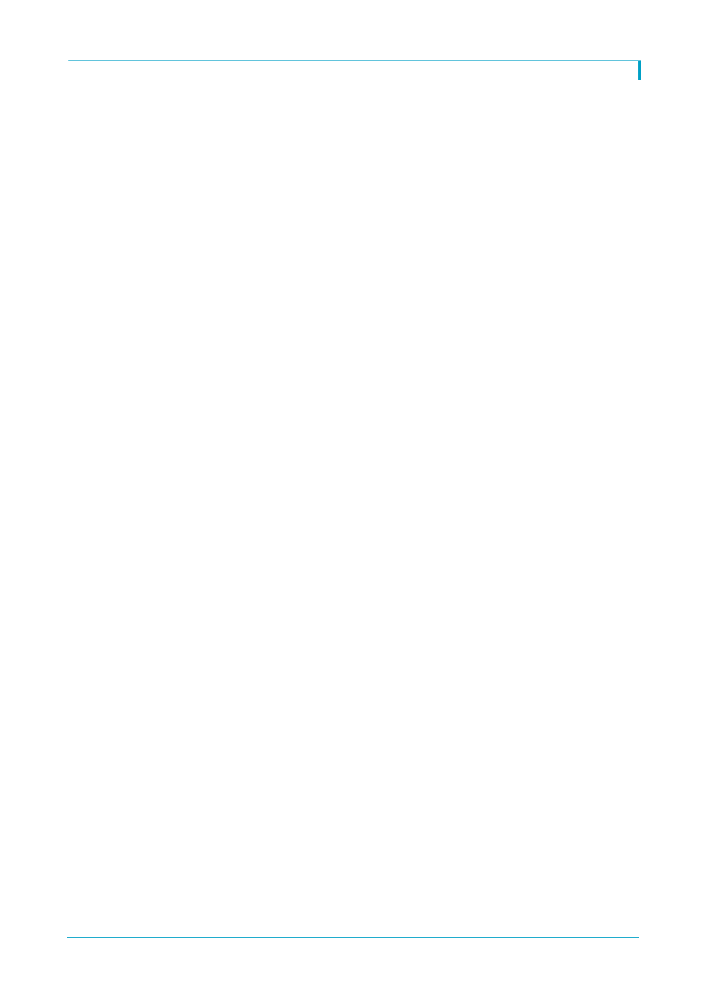

탐방속보
롯데지주 아래 금융계열사 처리 방안
금융계열사 지분 처리를 위한 유예기간은 2년, 추가 유예기간 2년 적용 시 총 4년
롯데에게 가장 좋은 상황은 중간금융지주법안 통과 후 지주 아래 보유이나 현재 상황
이 우호적이지 않은 것 같음
롯데카드는 롯데그룹 소비자의 빅데이터와 맞물려 있기에 외부 매각은 불가능
시장 내에서는 호텔롯데, 롯데물산 등 롯데지주의 행위 제한 요건과 무관한 일본 계열
사로 매각(그룹 내부 매각)을 기대하는 것 같음
롯데그룹의 일본계열사 지배력
현재 재판 관련해서 시장 우려가 있지만 신동빈 회장의 일본 내 입지는 탄탄한 상황
일본 롯데홀딩스에서 경영권과 관련한 주총에서 신동빈 회장이 우리사주조합을 비롯
계열사의 지지를 확고히 한 상황
주주환원정책, IR 활동
지난 9월 계열사 배당 30%를 발표
미진하지만 최근 배당은 증가 기조에 있음
일회성이 아니고 주주가치 재고를 위한 활동을 지속적으로 할 계획
과거 대비 IR 활동도 늘릴 계획임
한국투자증권 전망: 롯데지주의 상호출자 해소 방안
롯데지주는 자회사와의 상호출자를 내년 3월말까지 해소해야 함. 법적 요건이기에 오
너일가의 재판과 무관하게 조기 가시화 예상
현재 지주-자회사의 상호출자 고리는 롯데IT테크(구. 롯데정보통신)-롯데지주, 한국
후지필름-롯데지주, 대홍기획-롯데지주임
조기 해소 가시성이 높은 연결고리는 지난 10월 물적분할을 결정한 롯데IT테크임. 롯
데정보통신은 물적분할로 모회사 롯데IT테크와 100% 자회사 롯데정보통신 사업회사
를 설립
롯데IT테크가 계열사 지분(롯데쇼핑 4.8%, 롯데지주 2.35%, 롯데건설 5.3%, 롯데정
보통신 100% 등)을 보유 중인데 이는 롯데지주와 합병 가능성을 염두에 둔 것으로 판
단됨
양사 합병 시 롯데지주는 핵심계열사 지분을 추가 확보하면서 상호출자 해소가 동시에
가능함(롯데지주-롯데IT테크)
현재 롯데IT테크의 대주주는 롯데지주 7.66%, 롯데리아 34.5%, 대홍기획 28.5%이기
에 롯데지주가 사전에 롯데리아와 대홍기획이 보유한 롯데IT테크 지분을 매입해서 지
분을 70.66%까지 확보 시 소규모 합병으로 진행 가능(롯데지주 주총 생략)
롯데정보통신 사업회사는 롯데지주의 100% 자회사가 되기에 IPO 시 롯데지주의 구주
매출로 롯데지주의 자금조달이 가능할 것
한국후지필름이 보유한 롯데지주 지분 3.84% 지분 해소도 필요. 한국후지필름의 1대
주주는 롯데지주가 아닌 롯데상사로 롯데지주가 한국후지필름 4.97%를 롯데상사에게
매각하는 방식으로 상호출자 해소 가능
추후 롯데지주가 보유한 롯데상사 지분 27.68% 정리는 필요함(롯데상사의 1대 주주는
호텔롯데로 롯데상사 34.6% 보유)
대홍기획이 보유한 롯데지주 지분은 1.11%는 장내 매각 가능성. 신동빈 회장이 취득
시에는 504억원의 자금이 필요한데 소수 지분으로 큰 의미는 없음
2